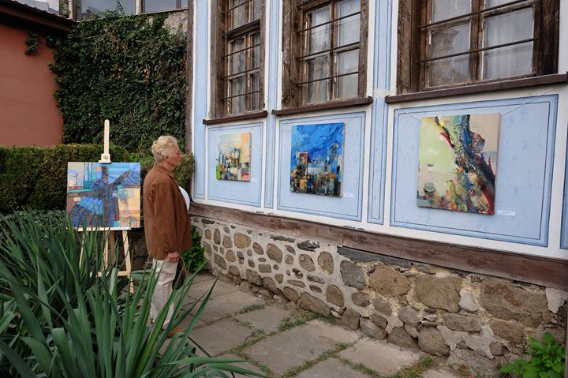
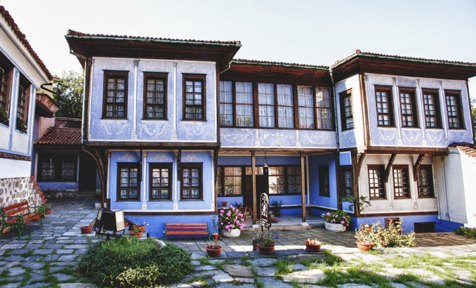
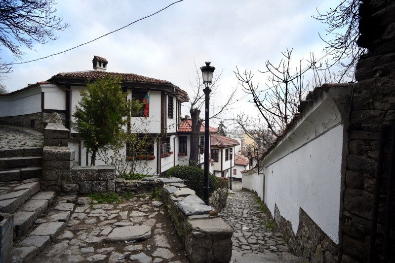
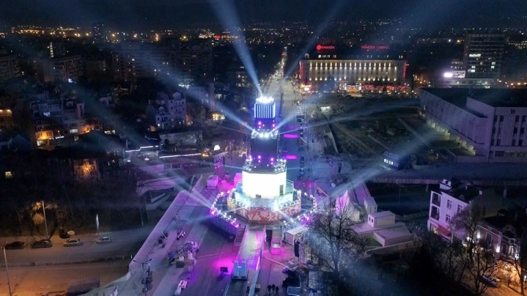
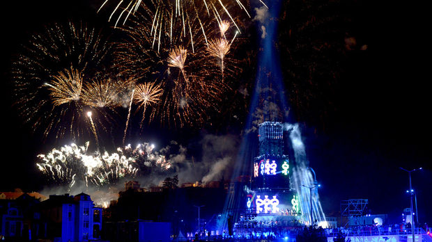

Пловдив-Традиции и обичаи
Международен пленер по живопис
| В продължение на 40 години, през есента, в Пловдив се провежда Международен пленер по живопис. Това е един от най-старите пленери в България, организиран от Дружество на пловдивските художници. След 5 годишно прекъсване, пленерът се завръща, като изданията през 2017, 2018 и 2019 г. са част от програмата на „Пловдив 2019“. Пленерът събира художници от различни европейски страни, които традиционно представят изложба с творбите, създадени по време на пленера, в къща „Нишанян“ в Стария град. Авторите рисуват в отворени ателиета с ученици от художествените училища в града и студенти от Амтии. Пленерът приключва с официално откриване на изложба с творбите на авторите. Всеки участник предоставя свои картини, които да останат в града. |  | |
| Снимки от Стария град в Пловдив |
||
|---|---|---|
|  |  | Участници през 2017 г. (16 – 26.09) са 10 автори, създали повече от 30 творби, вдъхновени от Пловдив. Васил Стоев, Деляна Георгиева, Жени Бозукова, Иван Чакъров, Илиана Манукова и Николай Томов пресъздават красотата на Пловдив, Стария град и историческите и културни забележителности през своя поглед и творчески опит заедно. |
„Европейски месец на културата“
| Пловдив е първият български град Европейска столица на културата. Двадесет години след като беше домакин на Месеца на културата през 1999 г., градът отбелязва през 2019 г. най-престижната културна инициатива на Европейския съюз. Европейска столица на културата е уникален за България проект, който предоставя нови възможности за развитие на потенциала на града победител и нова международна видимост на българската култура като цяло. В програмата на Пловдив са включени дейности и събития също в Южен Централен район на България. Днес Пловдив е мултикултурен град. |  |
|  | Програмата на Пловдив - Европейска столица на културата е структурирана в четири тематични платформи, свързани с типичните особености на града, с неговото културно наследство, история, темпо на живот, както и с проблемите, и със стереотипите за превъзмогване. Гостите на града под тепетата ще могат да избират измежду множество събития - от различни изложби, чрез които могат да се запознаят с кирилицата, паневритмията до съвместни театрални продукции с други страни от Западните Балкани и ромските и турските общности. Пловдив е един от българските градове с най-разнообразно културно наследство. |